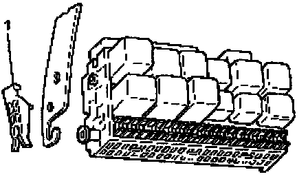
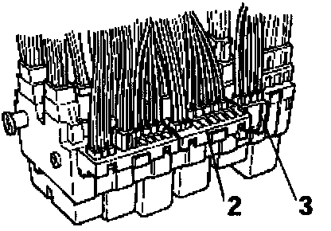
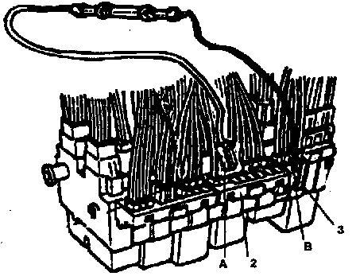
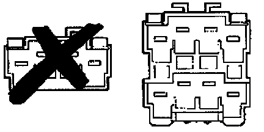

Section E - 97 Winnebego Camper
SECTION E1997 Winnebago Camper up to VIN: 70_VH089443
I. Install Resistor Wire - P/N 1HM 971 284A

^ Remove fuse box (central electric panel) cover located under dashboard on the driver's side
^ Remove fuse panel by pulling out left- and right- side securing clips (-1-)

^ Locate the BLACK junction box (-3-) with the BLACK color coded wires mounted on top of the fuse panel
^ Locate the diagnostic connector strip (-2-) on top of the fuse panel

^ Insert the SMALL connector (-A-) from new resistor wire 1HM 971 284A into any open position of diagnostic connector strip (-2-)
^ Insert the LARGE connector (-B-) from new resistor wire 1HM 971 284A into any open position of BLACK junction box (-3-)

IMPORTANT NOTE: IF THE BLACK 4-POINT JUNCTION BOX HAS NO OPEN TERMINAL, REPLACE 4-POINT JUNCTION BOX WITH A NEW 8-POINT JUNCTION BOX, PART NUMBER 3A0 937 517.
^ Reinstall fuse box; ensure that the clips engage in the retainer recesses and resistor wire is routed properly and cannot rattle
^ Reinstall fuse box (central electric panel) cover
II. Throttle Adjustment
- Turn ignition switch to the "ON" position (engine NOT running)
- Attach VAG 1551; go to 02 for transmission electronics, push 08 to read measuring blocks, then push 001 for measuring block # 1
- Push accelerator pedal to the floor and hold for 5 seconds, then release
* While pushing the accelerator pedal to the floor, the fourth position of display field 4 should change from 0 to 1. This is the kick down switch signal.
- Exit from 1551 and remove the ignition key